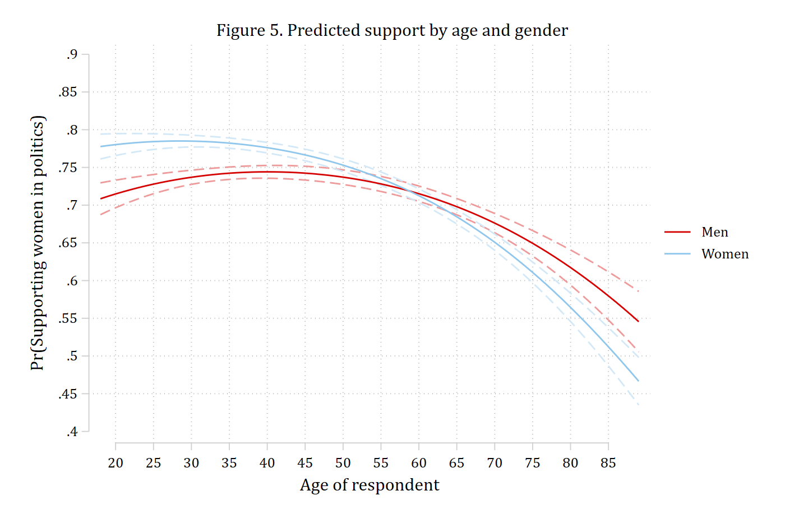
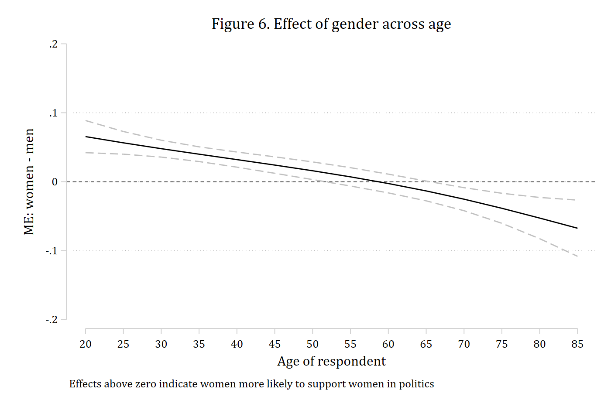
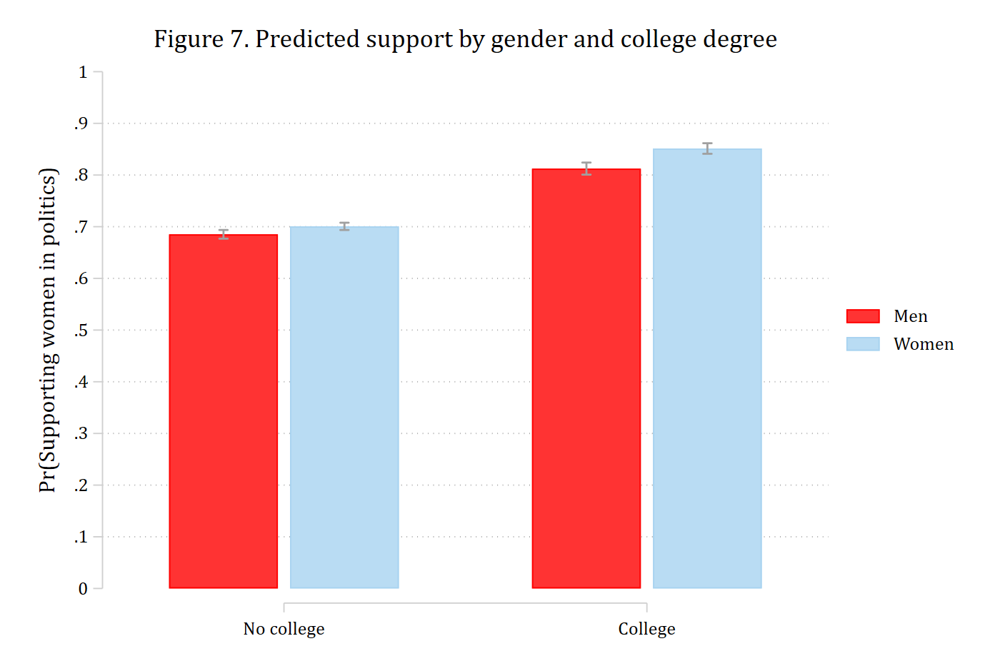
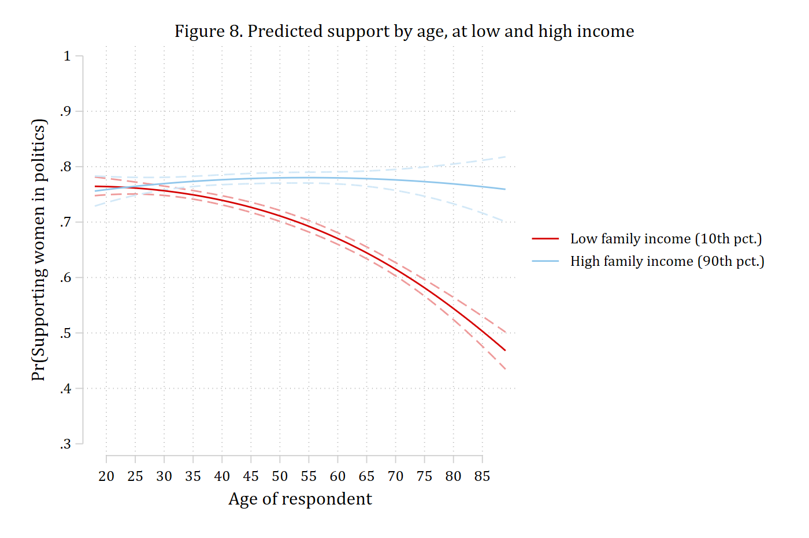
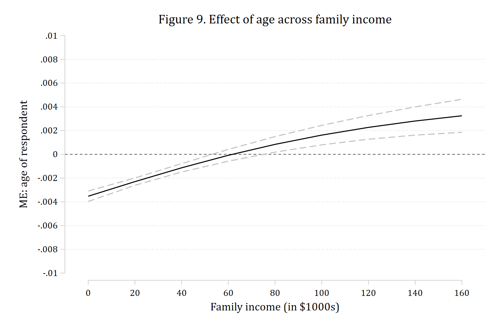
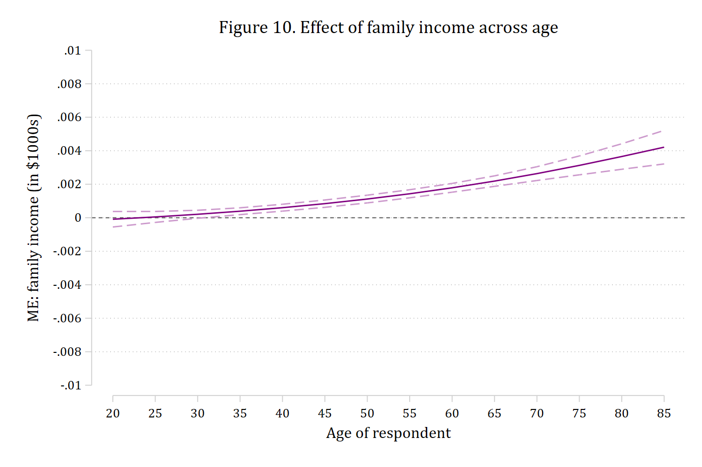

Tests of interaction
Section 3 of Mize and Han (forthcoming): Tables 2–5 and Figures 5–10
In nonlinear models the coefficient on a product term is not the test of interaction. Mize and Han (forthcoming), following Mize (2019), recommend plotting the predictions, calculating the marginal effect of the focal variable at chosen levels of the moderator (first differences), and testing whether those marginal effects differ (the second difference). This page runs the chapter’s Section 3 examples with mecompare: a continuous by binary interaction from both sides, two binary variables, two continuous variables, and the multi-category and three-way cases of Section 3.5. The Interactions pages cover the same methods with the examples of Mize (2019).
Throughout, the outcome is whether a GSS respondent thinks women are suited for politics, and the moderator is set with by() when it is binary or nominal and with covariates(z=(numlist)) when it is continuous.
Age by gender: the effect of age for men and women (3.1)
The model is a logit of support for women in politics on age, age², and gender, with all of their products.
use "https://tdmize.github.io/data/data/cda_gss", clear(cda_gss.dta | GSS 1972-2021 CDA - Categorical Data Analysis | date created 2023)drop if missing(fepolB, woman, age, college)(32,134 observations deleted)
. quietly logit fepolB c.age##c.age##i.woman, vce(robust)
estimates store agemodStart with the predictions (Figure 5)
quietly margins woman, at(age=(18(1)89))
marginsplot, recast(line) recastci(rline) ciopts(lpattern(dash) color(*.4)) ///
xlabel(20(5)85) ylabel(0.4(0.05)0.9) xtitle("Age of respondent") ///
ytitle("Pr(Supporting women in politics)") ///
title("Figure 5. Predicted support by age and gender")Variables that uniquely identify margins: age womangraph export "fig/chapter-fepol-age-gender.png", replace width(1400)(file fig/chapter-fepol-age-gender.png not found)
file fig/chapter-fepol-age-gender.png saved as PNG format
Young women are more supportive than young men, but the gender gap shrinks with age and reverses for the oldest respondents. The effect of age is small or null at younger ages and clearly negative at older ages, so a single summary of “the effect of age” will not do; the chapter calculates the effect at ages 20, 30, and 60 as well as on average.
Summary first differences and the second difference
The chapter’s Equations 30–31 are the MEM of a standard-deviation change in age for men and for women: everyone at the mean age, the change centered on it, and the control variables at their means. by(woman) reports the effect at each level of gender as a counterfactual (the whole sample set to men, then to women), start(atmeans) covariates(atmeans) makes it a MEM, and amount(sd) sets the change. The second difference – is the effect of age the same for men and women – is metest 2 - 1.
mecompare age, models(agemod) amount(sd) start(atmeans) covariates(atmeans) by(woman)Predicting: Pr(fepolB)
Marginal effects (N_agemod=36712)
| ME # Estimate Robust SE P>|z|
---------------------------------+---------------------------------------
age + SD |
Men | 1 -0.016 0.004 0.000
Women | 2 -0.045 0.003 0.000metest 2 - 1 | estimate se pvalue
---------------------------------+--------------------------------
age_woman_1 - age_woman_0 | -0.029 0.005 0.000 A standard-deviation increase in age reduces the probability of support by about 0.02 for men and 0.05 for women; the second difference is significant, so the effect of age is larger (more negative) for women.
Marginal effects at chosen ages (Tables 2 and 3)
Table 2 of the chapter is the effect of a five-year increase in age starting at 20, at 30, and at 60, separately for men and women. start(age=(20 30 60)) gives one row per starting value, amount(5) uncentered makes each change run upward from its start (20 to 25, 30 to 35, 60 to 65), and by(woman) repeats the set for each gender. The rows are ordered by gender first and then by starting age, so Table 3’s second differences at each age are metest 4 - 1, metest 5 - 2, and metest 6 - 3; add collects them into one table.
mecompare age, models(agemod) start(age=(20 30 60)) amount(5) uncentered by(woman)Predicting: Pr(fepolB)
Marginal effects (N_agemod=36712)
| ME # Estimate Robust SE P>|z|
---------------------------------+---------------------------------------
age + 5 (uncentered) |
Men at 20 | 1 0.013 0.003 0.000
Men at 30 | 2 0.005 0.002 0.012
Men at 60 | 3 -0.017 0.002 0.000
Women at 20 | 4 0.004 0.003 0.119
Women at 30 | 5 -0.003 0.002 0.119
Women at 60 | 6 -0.028 0.001 0.000
. metest, clear
metest 4 - 1, add rowname("2nd diff at age 20") | estimate se pvalue
---------------------------------+--------------------------------
2nd diff at age 20 | -0.009 0.004 0.036 metest 5 - 2, add rowname("2nd diff at age 30") | estimate se pvalue
---------------------------------+--------------------------------
2nd diff at age 20 | -0.009 0.004 0.036
2nd diff at age 30 | -0.008 0.003 0.003 metest 6 - 3, add rowname("2nd diff at age 60") | estimate se pvalue
---------------------------------+--------------------------------
2nd diff at age 20 | -0.009 0.004 0.036
2nd diff at age 30 | -0.008 0.003 0.003
2nd diff at age 60 | -0.011 0.002 0.000 metest, title("Second differences: women - men")Second differences: women - men
| estimate se pvalue
---------------------------------+--------------------------------
2nd diff at age 20 | -0.009 0.004 0.036
2nd diff at age 30 | -0.008 0.003 0.003
2nd diff at age 60 | -0.011 0.002 0.000 Age has no significant effect for 20- and 30-year-old women, while for men it is significantly positive at 20 and 30 and negative at 60. The effects differ by gender at all three ages.
Age by gender: the gender gap across age (3.2)
The other side of the same interaction takes gender as the focal variable: does the gender gap differ at different ages? The gap at each age is the marginal effect of i.woman with everyone set to that age, which is what covariates(age=(numlist)) does. Give it the range of age, save the results with store(), and plot them with coefplot for Figure 6.
mecompare i.woman, models(agemod) covariates(age=(20(5)85)) store(gap)Predicting: Pr(fepolB)
Marginal effects (N_agemod=36712)
| ME # Estimate Robust SE P>|z|
---------------------------------+---------------------------------------
woman |
Women - Men |
age=20 | 1 0.065 0.012 0.000
age=25 | 2 0.056 0.008 0.000
age=30 | 3 0.048 0.006 0.000
age=35 | 4 0.040 0.005 0.000
age=40 | 5 0.032 0.006 0.000
age=45 | 6 0.024 0.006 0.000
age=50 | 7 0.016 0.007 0.015
age=55 | 8 0.007 0.007 0.300
age=60 | 9 -0.003 0.007 0.703
age=65 | 10 -0.013 0.007 0.067
age=70 | 11 -0.025 0.009 0.003
age=75 | 12 -0.039 0.011 0.001
age=80 | 13 -0.053 0.015 0.001
age=85 | 14 -0.067 0.021 0.001
. coefplot gap_agemod, vertical recast(line) color(black) ///
ciopts(recast(rline) lpattern(dash) color(gs12)) yline(0) ///
coeflabels(woman_age_20 = "20" woman_age_25 = "25" woman_age_30 = "30" ///
woman_age_35 = "35" woman_age_40 = "40" woman_age_45 = "45" ///
woman_age_50 = "50" woman_age_55 = "55" woman_age_60 = "60" ///
woman_age_65 = "65" woman_age_70 = "70" woman_age_75 = "75" ///
woman_age_80 = "80" woman_age_85 = "85") ///
ylabel(-0.2(0.1)0.2) xtitle("Age of respondent") ytitle("ME: women - men") ///
title("Figure 6. Effect of gender across age") ///
note("Effects above zero indicate women more likely to support women in politics")
graph export "fig/chapter-fepol-gender-gap.png", replace width(1400)(file fig/chapter-fepol-gender-gap.png not found)
file fig/chapter-fepol-gender-gap.png saved as PNG format
Women are more supportive than men up to about age 50, there is no gender gap in the fifties and early sixties, and the gap reverses at older ages. Table 4 tests the interaction at empirical ideal types of age – the 10th, 50th, and 90th percentiles (25, 44, and 72) – with the second differences between each pair:
quietly summarize age, detail
mecompare i.woman, models(agemod) covariates(age=(`r(p10)' `r(p50)' `r(p90)'))Predicting: Pr(fepolB)
Marginal effects (N_agemod=36712)
| ME # Estimate Robust SE P>|z|
---------------------------------+---------------------------------------
woman |
Women - Men |
age=25 | 1 0.056 0.008 0.000
age=44 | 2 0.026 0.006 0.000
age=72 | 3 -0.031 0.009 0.001
. metest, clear
metest 2 - 1, add rowname("ME at 44 - ME at 25") | estimate se pvalue
---------------------------------+--------------------------------
ME at 44 - ME at 25 | -0.031 0.010 0.001 metest 3 - 1, add rowname("ME at 72 - ME at 25") | estimate se pvalue
---------------------------------+--------------------------------
ME at 44 - ME at 25 | -0.031 0.010 0.001
ME at 72 - ME at 25 | -0.087 0.013 0.000 metest 3 - 2, add rowname("ME at 72 - ME at 44") | estimate se pvalue
---------------------------------+--------------------------------
ME at 44 - ME at 25 | -0.031 0.010 0.001
ME at 72 - ME at 25 | -0.087 0.013 0.000
ME at 72 - ME at 44 | -0.056 0.010 0.000 metest, title("Second differences of the gender gap across ages")Second differences of the gender gap across ages
| estimate se pvalue
---------------------------------+--------------------------------
ME at 44 - ME at 25 | -0.031 0.010 0.001
ME at 72 - ME at 25 | -0.087 0.013 0.000
ME at 72 - ME at 44 | -0.056 0.010 0.000 Women are more supportive than men at ages 25 and 44 but men are more supportive at 72, and the gap differs significantly between each pair of ages.
Gender by college degree: two binary variables (3.3)
With a binary focal variable and a binary moderator there is one marginal effect per level of the moderator and one second difference. The model has gender, a college degree, and their product.
quietly logit fepolB i.woman##i.college, vce(robust)
estimates store collmodFigure 7 of the chapter is a bar chart of the four predicted probabilities, made with margins and coefplot:
quietly margins, at(college=(0 1) woman=0) post
estimates store prmen
estimates restore collmod(results collmod are active now)quietly margins, at(college=(0 1) woman=1) post
estimates store prwomen. coefplot prmen prwomen, recast(bar) vertical barwidth(0.3) citop ///
ciopts(recast(rcap) color(gs10)) ylabel(0(0.1)1) ///
xlabel(1 "No college" 2 "College") legend(order(1 "Men" 3 "Women")) ///
ytitle("Pr(Supporting women in politics)") ///
title("Figure 7. Predicted support by gender and college degree")
graph export "fig/chapter-fepol-gender-college.png", replace width(1400)(file fig/chapter-fepol-gender-college.png not found)
file fig/chapter-fepol-gender-college.png saved as PNG format
Table 5 is the effect of a college degree for men and for women and the second difference between them:
estimates restore collmod(results collmod are active now)mecompare i.college, models(collmod) by(woman)Predicting: Pr(fepolB)
Marginal effects (N_collmod=36712)
| ME # Estimate Robust SE P>|z|
---------------------------------+---------------------------------------
college |
College - No Col D |
Men | 1 0.127 0.007 0.000
Women | 2 0.151 0.006 0.000metest 2 - 1 | estimate se pvalue
---------------------------------+--------------------------------
college_woma~1 - college_woma~0 | 0.023 0.010 0.016 A college degree is associated with a 0.13 higher probability of support for men and 0.15 for women; the second difference of about 0.02 is significant, so the effect of a degree is stronger for women.
Age by family income: two continuous variables (3.4)
The chapter’s third example interacts age (with its squared term) and family income, in thousands of dollars. The model:
quietly logit fepolB c.age##c.age##c.faminc, vce(robust)
estimates store incmodThe chapter’s first approach picks ideal types of one continuous variable – the 10th and 90th percentiles of income, low and high – and plots the predictions across the range of the other (Figure 8). The percentiles are rounded to two decimals before they go into at() and covariates().
quietly summarize faminc if e(sample), detail
local p10 : display %5.2f r(p10)
local p90 : display %5.2f r(p90). quietly margins, at(faminc=(`p10' `p90') age=(18(1)89))
marginsplot, x(age) recast(line) recastci(rline) ciopts(lpattern(dash) color(*.4)) ///
xlabel(20(5)85) ylabel(0.3(0.1)1) xtitle("Age of respondent") ///
ytitle("Pr(Supporting women in politics)") ///
legend(order(3 "Low family income (10th pct.)" 4 "High family income (90th pct.)")) ///
title("Figure 8. Predicted support by age, at low and high income")Variables that uniquely identify margins: faminc agegraph export "fig/chapter-fepol-age-income.png", replace width(1400)(file fig/chapter-fepol-age-income.png not found)
file fig/chapter-fepol-age-income.png saved as PNG format
Age has a clear negative effect for those with low incomes and little or no effect for those with high incomes. The first differences are the marginal effects of age with everyone set to each income value, and the second difference is the test of interaction; here the chapter uses the instantaneous rate of change, amount(rate).
quietly summarize faminc if e(sample), detail
local p10 : display %5.2f r(p10)
local p90 : display %5.2f r(p90). mecompare age, models(incmod) covariates(faminc=(`p10' `p90')) amount(rate)Predicting: Pr(fepolB)
Marginal effects (N_incmod=33260)
| ME # Estimate Robust SE P>|z|
---------------------------------+---------------------------------------
age(rate) |
faminc=5.99 | 1 -0.003 0.000 0.000
faminc=68.22 | 2 0.000 0.000 0.271metest 2 - 1 | estimate se pvalue
---------------------------------+--------------------------------
age_faminc_~22 - age_faminc_~99 | 0.003 0.000 0.000 The second approach plots the marginal effect of one variable across the whole range of the other, and then switches the two variables’ roles. Figure 9 is the effect of age across income: covariates() takes the range of income and store() saves the effects for coefplot.
mecompare age, models(incmod) covariates(faminc=(0(20)160)) amount(rate) store(ageme)Predicting: Pr(fepolB)
Marginal effects (N_incmod=33260)
| ME # Estimate Robust SE P>|z|
---------------------------------+---------------------------------------
age(rate) |
faminc=0 | 1 -0.004 0.000 0.000
faminc=20 | 2 -0.002 0.000 0.000
faminc=40 | 3 -0.001 0.000 0.000
faminc=60 | 4 -0.000 0.000 0.752
faminc=80 | 5 0.001 0.000 0.012
faminc=100 | 6 0.002 0.000 0.000
faminc=120 | 7 0.002 0.001 0.000
faminc=140 | 8 0.003 0.001 0.000
faminc=160 | 9 0.003 0.001 0.000
. coefplot ageme_incmod, vertical recast(line) color(black) ///
ciopts(recast(rline) lpattern(dash) color(gs12)) yline(0) ///
coeflabels(age_faminc_0 = "0" age_faminc_20 = "20" age_faminc_40 = "40" ///
age_faminc_60 = "60" age_faminc_80 = "80" age_faminc_100 = "100" ///
age_faminc_120 = "120" age_faminc_140 = "140" age_faminc_160 = "160") ///
ylabel(-0.01(0.002)0.01) xtitle("Family income (in $1000s)") ///
ytitle("ME: age of respondent") ///
title("Figure 9. Effect of age across family income")
graph export "fig/chapter-fepol-age-me-by-income.png", replace width(1400)(file fig/chapter-fepol-age-me-by-income.png not found)
file fig/chapter-fepol-age-me-by-income.png saved as PNG format
Age has a significant negative effect at lower incomes; the effect reverses and is positive at the highest incomes. Figure 10 flips the roles: the effect of income across age.
mecompare faminc, models(incmod) covariates(age=(20(5)85)) amount(rate) store(incme)Predicting: Pr(fepolB)
Marginal effects (N_incmod=33260)
| ME # Estimate Robust SE P>|z|
---------------------------------+---------------------------------------
faminc(rate) |
age=20 | 1 -0.000 0.000 0.711
age=25 | 2 0.000 0.000 0.766
age=30 | 3 0.000 0.000 0.088
age=35 | 4 0.000 0.000 0.000
age=40 | 5 0.001 0.000 0.000
age=45 | 6 0.001 0.000 0.000
age=50 | 7 0.001 0.000 0.000
age=55 | 8 0.001 0.000 0.000
age=60 | 9 0.002 0.000 0.000
age=65 | 10 0.002 0.000 0.000
age=70 | 11 0.003 0.000 0.000
age=75 | 12 0.003 0.000 0.000
age=80 | 13 0.004 0.000 0.000
age=85 | 14 0.004 0.001 0.000
. coefplot incme_incmod, vertical recast(line) color(purple) ///
ciopts(recast(rline) lpattern(dash) color(purple*.4)) yline(0) ///
coeflabels(faminc_age_20 = "20" faminc_age_25 = "25" faminc_age_30 = "30" ///
faminc_age_35 = "35" faminc_age_40 = "40" faminc_age_45 = "45" ///
faminc_age_50 = "50" faminc_age_55 = "55" faminc_age_60 = "60" ///
faminc_age_65 = "65" faminc_age_70 = "70" faminc_age_75 = "75" ///
faminc_age_80 = "80" faminc_age_85 = "85") ///
ylabel(-0.01(0.002)0.01) xtitle("Age of respondent") ///
ytitle("ME: family income (in $1000s)") ///
title("Figure 10. Effect of family income across age")
graph export "fig/chapter-fepol-income-me-by-age.png", replace width(1400)(file fig/chapter-fepol-income-me-by-age.png not found)
file fig/chapter-fepol-income-me-by-age.png saved as PNG format
Income has no effect for the youngest adults, and an increasingly positive effect at older ages.
A multi-category outcome (3.5.b)
With a nominal or ordinal outcome there is one set of marginal effects per outcome category, and one second difference per category. The chapter’s example is a multinomial logit of self-rated health on gender, family income, and their product. by(woman) gives the effect of income for men and for women on every health category; the rows are ordered by outcome category and then by gender, so the four second differences are rows 2 - 1, 4 - 3, 6 - 5, and 8 - 7.
quietly mlogit health i.woman##c.faminc, vce(robust)
estimates store healthmod. mecompare faminc, models(healthmod) by(woman) amount(rate)Predicting: Pr(health==excellent)
Marginal effects (N_healthmod=19877)
| ME # Estimate Robust SE P>|z|
---------------------------------+---------------------------------------
faminc(rate) |
excellent - Men | 1 0.002 0.000 0.000
excellent - Women | 2 0.003 0.000 0.000
good - Men | 3 0.002 0.000 0.000
good - Women | 4 0.002 0.000 0.000
fair - Men | 5 -0.002 0.000 0.000
fair - Women | 6 -0.003 0.000 0.000
poor - Men | 7 -0.002 0.000 0.000
poor - Women | 8 -0.002 0.000 0.000
. metest, clear
metest 2 - 1, add rowname("Excellent") | estimate se pvalue
---------------------------------+--------------------------------
Excellent | 0.001 0.000 0.000 metest 4 - 3, add rowname("Good") | estimate se pvalue
---------------------------------+--------------------------------
Excellent | 0.001 0.000 0.000
Good | 0.000 0.000 0.953 metest 6 - 5, add rowname("Fair") | estimate se pvalue
---------------------------------+--------------------------------
Excellent | 0.001 0.000 0.000
Good | 0.000 0.000 0.953
Fair | -0.001 0.000 0.001 metest 8 - 7, add rowname("Poor") | estimate se pvalue
---------------------------------+--------------------------------
Excellent | 0.001 0.000 0.000
Good | 0.000 0.000 0.953
Fair | -0.001 0.000 0.001
Poor | 0.000 0.000 0.647 metest, title("Second differences (women - men) by health category")Second differences (women - men) by health category
| estimate se pvalue
---------------------------------+--------------------------------
Excellent | 0.001 0.000 0.000
Good | 0.000 0.000 0.953
Fair | -0.001 0.000 0.001
Poor | 0.000 0.000 0.647 A three-way interaction (3.5.c)
A three-way interaction asks whether a second difference itself differs across the levels of a third variable. The chapter’s example is from Mize’s workshop on nonlinear interactions: has support for same-sex relationships grown at different rates for conservatives and non-conservatives, and does that difference differ between Black and White respondents? The focal variable is time (years since 1976) and the two moderators are race and conservatism, both binary. by() takes both moderators, giving the marginal effect of time in each of the four race-by-conservatism cells, ordered by the first by() variable and then the second.
use "https://tdmize.github.io/data/data/nli_gss", clear(GSS 1972-2016 | NLI NonLinear Interaction Effects | 2018-12-17)drop if missing(sameokB, year1976, conviewSS, age, white, male, income, married, college, conserv)(43,258 observations deleted)
. quietly logit sameokB c.year1976##c.year1976##i.white##i.conserv c.age ///
i.male c.income i.married i.college, vce(robust)
estimates store samemod. mecompare year1976, models(samemod) by(white conserv) amount(rate)Predicting: Pr(sameokB)
Marginal effects (N_samemod=19019)
| ME # Estimate Robust SE P>|z|
---------------------------------+---------------------------------------
year1976(rate) |
Black No | 1 0.007 0.001 0.000
Black Yes | 2 0.006 0.001 0.000
White No | 3 0.012 0.000 0.000
White Yes | 4 0.006 0.000 0.000The second differences are the conservatism gap in the effect of time within each racial group, and the third difference is the difference between those two gaps:
metest, clear
metest 1 - 2, add rowname("2nd diff: Black (not con - con)") | estimate se pvalue
---------------------------------+--------------------------------
2nd diff |
Black (not con - con) | 0.001 0.001 0.640 metest 3 - 4, add rowname("2nd diff: White (not con - con)") | estimate se pvalue
---------------------------------+--------------------------------
2nd diff |
Black (not con - con) | 0.001 0.001 0.640
White (not con - con) | 0.006 0.001 0.000 metest (3 - 4) - (1 - 2), add rowname("3rd diff: White - Black") | estimate se pvalue
---------------------------------+--------------------------------
2nd diff |
Black (not con - con) | 0.001 0.001 0.640
White (not con - con) | 0.006 0.001 0.000
---------------------------------+--------------------------------
3rd diff |
White - Black | 0.005 0.001 0.000 metest, title("Marginal effects of time: second and third differences")Marginal effects of time: second and third differences
| estimate se pvalue
---------------------------------+--------------------------------
2nd diff |
Black (not con - con) | 0.001 0.001 0.640
White (not con - con) | 0.006 0.001 0.000
---------------------------------+--------------------------------
3rd diff |
White - Black | 0.005 0.001 0.000 As the chapter cautions, three-way interactions need large samples and a strong theoretical motivation; the mechanics, however, are the same mecompare call and metest lines as for a two-way interaction.
Reference
Mize, Trenton D. and Bing Han. Forthcoming. “Marginal effects: flexible methods for interpretation across linear and nonlinear models.” In Understanding Data Modeling and Data Analysis, edited by David Weakliem. Edward Elgar Publishing.
Mize, Trenton D. 2019. “Best Practices for Estimating, Interpreting, and Presenting Nonlinear Interaction Effects.” Sociological Science 6: 81–117. https://doi.org/10.15195/v6.a4